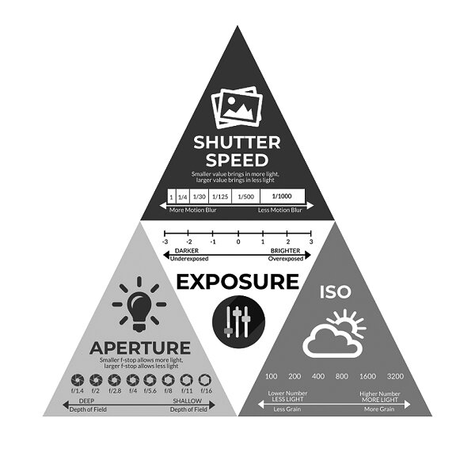
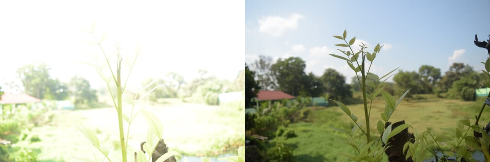

Saat menggunakan kamera, kalian mungkin kalian pernah mendengar segitiga exposure. Apa sih segitiga exposure itu? Seberapa pentingnya segitiga exposure?
Segitiga Exposure adalah Elemen-elemen dasar dalam fotografi yang terdiri dari Aperture, ISO dan Shutter Speed, 3 Elemen tersebut berpengaruh pada seberapa banyak cahaya (dalam artian semakin terang) yang ditangkap oleh Sensor.

Source : Website Kemenkeu
ISO mengatur seberapa sensitif sensor kamera dalam menangkap cahaya. Semakin tinggi nilai ISO maka sensor akan lebih sensitif terhadap cahaya dan gambar akan menjadi terang, dan semakin kecil maka gambar menjadi redup. Namun, apabila ISO terlalu tinggi maka gambar yang dihasilkan memiliki banyak Noise dan warnanya akan lebih pucat.
Shutter Speed mengatur berapa lama Sensor menerima cahaya. Semakin lama shutter dibuka maka semakin terang pula gambarnya, dan semakin kecil semakin redup. Namun, shutter dibuka terlalu lama dan subjek bergerak, maka gambar yang dihasilkan akan menjadi blur.
Aperture mengatur berapa banyak bukaan lensa dibuka, semakin kecil angkanya semakin lebar bukaannya dan semakin terang gambarnya. Bukaan yang besar akan memberikan efek depth atau efek bokeh dan mempersempit titik fokus.
 Kiri: Overexposed, Kanan: Properly Exposed
Cara agar mendapatkan exposure yang sesuai adalah dengan mengeceknya melalui Live-view / Monitor pada Kamera (di EVF juga kalau mirrorless). Namun apabila memotret dengan DSLR, maka yang harus diperhatikan adalah "light meter" yang ada pada OVF seperti dibawah ini
. . . . . \/ . . . . .
[-1 . . . 0 . . . +1]
-1 = Underexposed 0 = Properly exposed +1 = Overexposed
Urutan setting exposure yang menurut saya "work" adalah pertama atur Aperture, apabila kurang memuaskan maka yang kedua Shutter Speed, jika masih belum memuaskan maka yang ketiga adalah ISO